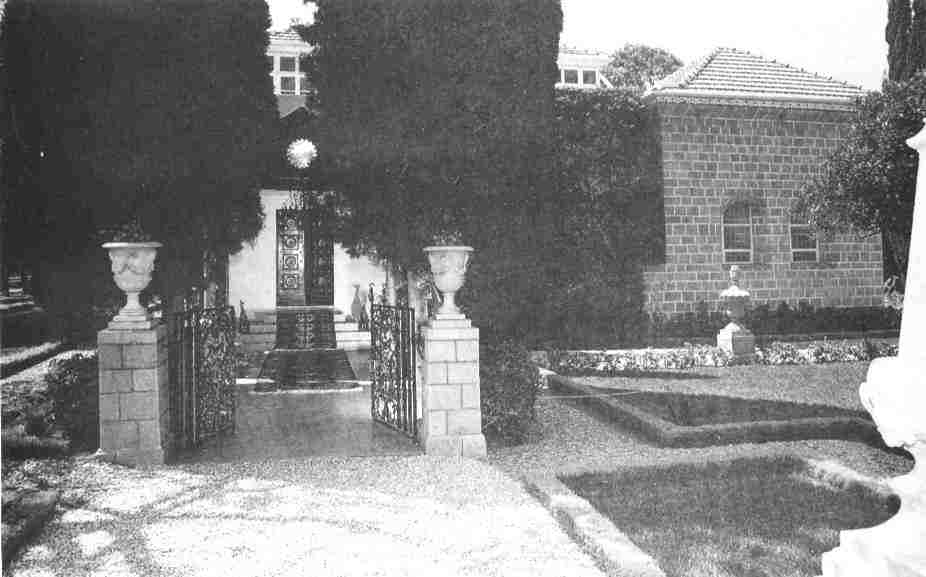

The Ascension of Bahá'u'lláhThe ascension of Bahá'u'lláh* on 29 May 1892 brought to a close the outpouring of a most momentous and transcendental Revelation, pre-eminent among all the Revelations of the past. For well-nigh forty years this earth had been made the 'footstool' of its God, and 'been chosen as the seat of His mighty throne'. The day of God, whose advent 'all the Prophets and Chosen Ones and the holy ones' had 'wished to witness', had been ushered in. The 'everlasting Father', the 'mighty God', who was to appear in the form of a human temple, as prophesied by Isaiah and other Prophets, had manifested Himself. 'The purpose underlying all creation' which as testified by Bahá'u'lláh was 'the revelation of this most sublime, this most holy Day', had been realized. In the course of four decades this earth had been immersed in an ocean of Revelation, releasing thereby enormous spiritual energies for the regeneration of mankind, energies that are sufficient to bring about in the fullness of time the birth of the Bahá'í civilization which is itself destined to usher in an age when the human race will have achieved such a nobility of character as to make this world appear as a reflection of the Kingdom. With the ascension of Bahá'u'lláh the revelation of the verses of God came to an end and the bounty of the release of spiritual energies ceased, never to reappear before the lapse of at least a full millennium. The truth of these words revealed by Him in Baghdád were fully realized after His ascension:
|
* The term 'ascension' as commonly used by Bahá'ís signifies the passing of Bahá'u'lláh, the ascension of His Spirit to the worlds beyond. |
|
O Son of Spirit! The time cometh, when the nightingale of holiness will no longer unfold the inner mysteries and ye will all be bereft of the celestial melody and of the voice from on high.1The ascension of Bahá'u'lláh took place in the Mansion of Bahjí, and it caused indescribable consternation among His followers. Nabíl-i-A'zam, a true lover of the Blessed Beauty and one of His devoted Apostles, has left to posterity a moving description of this calamitous event. The following is a summary translation of his account:
As attested by the Most Great Branch,* nine months before this most grievous event--His ascension--Bahá'u'lláh had voiced His desire to depart from this world. During these nine months, from the tone of His exhortations and remarks to those friends who attained His presence it became increasingly apparent that the end of His earthly life was approaching. He seemed to be arranging the affairs with a sense of urgency. But He never spoke openly about the approaching end of His life. |
* During Bahá'u'lláh's Ministry 'Abdu'l-Bahá was known by several titles, including Áqá (Master) and the Most Great Branch. The designation 'Abdu'l-Bahá (Servant of Bahá) was adopted by Himself after the ascension of His Father. (A.T.)
1. Hidden Words, Persian no. 15. [Naw-Rúz] The Kitáb-i-Aqdas; Prayers and Meditations, p. 67; The Revelation of Bahá'u'lláh, vol. 1, 2, 3, 4
|
|
audience with Him, so that I could have clung to the hem of His holy vesture and begged Him to accept me as a sacrifice in His path, to relieve me from the vanity of this world and admit me into the realm of everlasting joy. Alas! Alas! what had been pre-ordained did come to pass. |
||
Person, and the signs of the most great favours were manifested in His countenance. Truly, on that day the joy and happiness of the friends, those who circled around the throne of the Beauty of their Lord, were such that all the inhabitants of 'Akká and indeed the people of Syria were influenced and affected by their condition. All the people both low and high were congratulating each other as in a day of festival. |
* Not 'Abdu'l-Bahá, as is stated in Ayyám-i-Tis'ih. |
|
you to exalt the Cause of the Lord of being.'* This was the last audience with Him. The birds of the hearts of His lovers were addressed from on high: 'Verily the door of union is closed to all who are in heaven and on earth...'Shoghi Effendi describes some of the events after the ascension of Bahá'u'lláh in these words:
|
* The passage quoting Bahá'u'lláh's words is a translation by Shoghi Effendi. (A.T.) † see vol. 3, pp. 223-4. (A. T.) ‡ This sentence from Nabíl is Shoghi Effendi's translation. (A.T.) § For these verses see vol. 3, pp. 371-2. (A.T.)
2. Ishráq Khávarí, Ayyám-i-Tis'ih, pp. 399-406. [Naw-Rúz] The Kitáb-i-Aqdas; Prayers and Meditations, p. 67; The Revelation of Bahá'u'lláh, vol. 1, 2, 3, 4
|
|
The news of His ascension was instantly communicated to Sultán 'Abdu'l-Hamíd in a telegram which began with the words 'the Sun of Bahá has set' and in which the monarch was advised of the intention of interring the sacred remains within the precincts of the Mansion, an arrangement to which he readily assented. Bahá'u'lláh was accordingly laid to rest in the northernmost room of the house which served as a dwelling-place for His son-in-law, the most northerly of the three houses lying to the west of, and adjacent to, the Mansion. His interment took place shortly after sunset, on the very day of His ascension...Notables, among whom were numbered Shí'ahs, Sunnís, Christians, Jews and Druzes, as well as poets, 'ulamás and government officials, all joined in lamenting the loss, and in magnifying the virtues and greatness of Bahá'u'lláh, many of them paying to Him their written tributes, in verse and in prose, in both Arabic and Turkish. From cities as far afield as Damascus, Aleppo, Beirut and Cairo similar tributes were received. These glowing testimonials were, without exception, submitted to 'Abdu'l-Bahá, Who now represented the Cause of the departed Leader, and Whose praises were often mingled in these eulogies with the homage paid to His Father.Nabíl, his heart burning with the fire of bereavement, paid this last tribute to His Lord and wrote these lines as a supplication to Him:
O Thou the King of creation and the Ruler of this world and the world to come! Both in Thy presence and in Thy absence, Thou hast been the cause of the tranquillity of the hearts of |
3. God Passes By, pp. 222-3. |
|
men and the advancement of the nations. From the moment Thou didst mount Thy throne at the hour of dawn on the 2nd on Muharram 1233 (12 November 1817) until Thy ascension to the Realms of Eternity, eight hours after sunset on the 2nd of Dhi'l-Qa'dih 1309 (29 May 1892) a period of seventy-seven years less two months according to the lunar calendar...Thou wert at all times, at day and at night, each month and each year, the cause of the exaltation of mankind. No needy suppliant who had set his heart toward Thee was turned back from the door of Thy generosity without vouchsafing unto him supreme felicity and goodly gifts, and no sorrowful destitute was sent out of Thy All-glorious presence except that Thou didst bestow upon him blissful joy and ample hope. And now far be it from Thee not to relieve me from my dreadful woes, and lead me to the abode of a never-ending felicity. Thou art God and there is no God save Thee.4Nabíl, who was asked by 'Abdu'l-Bahá to select from the Writings of Bahá'u'lláh those passages which constitute the text of the Tablet of Visitation, which nowadays is usually recited in the Shrine of Bahá'u'lláh and the Báb, was inconsolable after the ascension of his Lord. To the ordeal of separation from his Beloved was added soon afterwards a far more grievous blow--the violation of the Covenant by 'Abdu'l-Bahá's brothers; which although it had not been made public at that time was clearly discernible to those who were close to the Holy Family. Nabíl could no longer bear the agony of those cruel and tempestuous days. He took his own life by drowning himself in the sea a few months after the ascension of Bahá'u'lláh.* During His illness Bahá'u'lláh summoned the members of His family to His bedside, bade His last farewell to them and assured them that in a special document entrusted to 'Abdu'l-Bahá He had clearly directed their steps in the service of the Cause. The document referred to was His Will and Testament, designated by Himself 'Kitáb-i-'Ahdí (The Book of My Covenant).† On the |
* see vol. 1, pp. 205-6. † The full text of the Kitáb-i-'Ahdí, or, as it is usually called, the Kitáb-i-'Ahd (Book of the Covenant), is translated into English and published in Tablets of Bahá'u'lláh, pp. 219-23.
4. Ishráq Khávarí, Ayyám-i-Tis'ih, pp. 404-5. [Tablet of Visitation], Prayers and Meditations, p. 310 |
|
|
morning of the ninth day after the ascension, in the presence of nine witnesses chosen from amongst members of His family and friends, this document in Bahá'u'lláh's own handwriting was read aloud by Áqá Ridáy-i-Qannád,* and in the afternoon of the same day it was read again by Majdu'd-Dín† in the Holy Tomb in the presence of a large number of friends. There was now no shadow of doubt as who the Centre of the Covenant was. But alas, the fire of jealousy which had been smouldering in the hearts of 'Abdu'l-Bahá's unfaithful brothers over a long period of time now burst into flame. This, coupled with the lust for leadership of Mírzá Muhammad-'Alí, the Arch-breaker of the Covenant of Bahá'u'lláh, created a severe crisis in the fortunes of the Faith. The signs of the violation of the Covenant appeared on the actual day of the ascension. The body of Bahá'u'lláh was awaiting interment when His sons secretly launched their treacherous schemes to rob the Centre of the Covenant of His legitimate successorship which was explicitly conferred upon Him by Bahá'u'lláh Himself. A detailed account of this breaking of the Covenant is beyond the scope of this book. It is, however, the hope of the present author to produce, God willing, one or two volumes on the Covenant of Bahá'u'lláh as a sequel to the four volumes of The Revelation of Bahá'u'lláh. The study of the Kitáb-i-'Ahd with all its implications will also be carried out in these forthcoming volumes. With the ascension of Bahá'u'lláh the most momentous and the most fertile period in the history of religion was terminated. The spiritual energies for the advancement of humanity were so intense that even during His own Ministry, a mere forty years, their creative power began to exert their influence not only upon |
* see vol. 1, pp. 288-9, and Memorials of the Faithful, pp. 39-41. † The son of Mírzá Músá, Áqáy-i-Kalím, the faithful brother of Bahá'u'lláh. However, Majdu'd-Din violated the Covenant and was one of 'Abdu'l-Bahá's formidable adversaries. |
|
|
the Bahá'í community but also outside it. In the course of the most turbulent years of His Ministry, we may observe with feelings of awe and wonder how a series of miraculous and highly significant achievements take place, all due to the outpouring of His Revelation. The rapid and revolutionizing change in the conduct of the Bábí community while Bahá'u'lláh was in 'Iráq; the revelation of the Kitáb-i-Íqán, the key to the understanding of all religions; the rising prestige of Bahá'u'lláh and the community He represented in the eyes of the public both in 'Iráq and Adrianople; the public proclamation of His Faith to the Kings and leaders of the world; the steadily declining influence of Mírzá Yahyá; the banishment of Bahá'u'lláh to the Holy Land in fulfilment of the prophecies of past religions; the offering up of the life of His beloved son, the Purest Branch, as a sacrifice so that the servants of God 'may be quickened, and all that dwell on earth be united'; His miraculous release from the barracks of 'Akká; the gradual recognition of His divine qualities and superhuman powers by the inhabitants of 'Akká; the revelation of the Kitáb-i-Aqdas and formulation of the laws described by Him as 'the highest means for the maintenance of order in the world and the security of its peoples'; the arrival of many pilgrims to attain His presence, resulting in widening their vision of the Faith and galvanizing them into a new creation; the heroic self-sacrifice of many martyrs shedding a great lustre on the annals of the Faith; the departure of Bahá'u'lláh from the prison-city and the transfer of His residence to the Mansion of Mazra'ih, thus making the edict of the Sultán for life imprisonment a dead letter; the unsolicited and genuine marks of honour shown to Bahá'u'lláh by the rulers of Palestine, the high-ranking government officials and outstanding men of culture; the steadily mounting prestige of 'Abdu'l-Bahá, the outpouring of whose love and compassion upon high and low alike made Him the acknowledged father of the poor, a counsellor to the authorities and a source of knowledge for the learned; the enormous expansion of the community in Persia; the conversion of many outstanding men of learning to the Faith; the conversion of |
 |
|
Jewish and Zoroastrian people; the expansion of the Faith outside Persia to more than ten countries in Asia and Africa; the conversion of Buddhists to the Faith in India and Burma; the building up of the vibrant community in 'Ishqábád and the preparations for the erection of a House of Worship there; the transfer of Bahá'u'lláh's residence to the Mansion of Bahjí, described by Him as 'the most sublime vision of mankind'; the enormous extension in the range of Bahá'u'lláh's Writings and the Revelation of principles and precepts of the Faith, which together with the laws of the Kitáb-i-Aqdas constitute the warp and woof of the fabric of His future World Order; the appointment of the Hands of the Cause of God, forerunners of one of the arms of the Administrative Order of His Faith; the constant movement of travel teachers throughout Persia and adjoining countries; the revelation of the Tablet of Carmel, the charter for the building of the Spiritual and Administrative Centre of the Faith on God's holy mountain; and finally one of the most momentous acts of His Ministry, the establishment of a mighty Covenant with His followers bequeathing to posterity the gift of 'a day that shall not be followed by night'--these are some of the achievements of the Ministry of Bahá'u'lláh. They are but a prelude to the emergence in the fullness of time of a slowly maturing divine civilization embracing the whole of mankind. The following words of 'Abdu'l-Bahá portray the state of the Cause in its present infancy and its coming of age in the future:
One of the great events which is to occur in the Day of the manifestation of that incomparable Branch is the hoisting of the Standard of God among all nations. By this is meant that all nations and kindreds will be gathered together under the shadow of this Divine Banner, which is no other than the Lordly Branch itself, and will become a single nation. Religious and sectarian antagonism, the hostility of races and peoples, and differences among nations, will be eliminated. All men will adhere to one religion, will have one common faith, will be blended into one race and become a single |
||
people. All will dwell in one common fatherland, which is the planet itself.5He has moreover explained:
Now, in the world of being, the Hand of Divine power hath firmly laid the foundations of this all-highest bounty, and this wondrous gift. Whatsoever is latent in the innermost of this holy Cycle shall gradually appear and be made manifest, for now is but the beginning of its growth, and the dayspring of the revelation of its signs. Ere the close of this century and of this age, it shall be made clear and evident how wondrous was that spring-tide, and how heavenly was that gift.6 |
5. Quoted by Shoghi Effendi, 'The Unfoldment of World Civilization', The World Order of Bahá'u'lláh, pp. 204-5. 6. ibid. p. 205. |